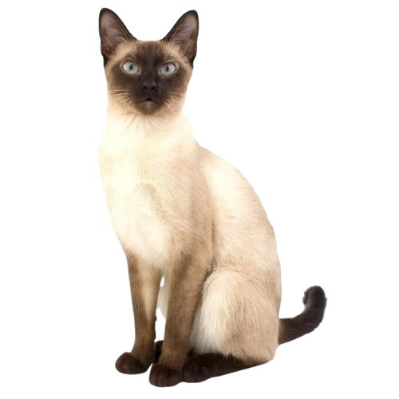

integrante de familia! 
Loky
Raza: Siames
Edad: 2 años
Macho
El Siamés detona elegancia y gracia. Se trata de una raza
llamativa y reconocible inclusio para quienes no saben de gatos.
En especial, Loky es un gato muy afectuoso y sociable, a su vez es
curioso y muy activo, así que si te gusta el relajo ¡es el gato perfecto para ti!
Lucy
Raza: Bobtail Japones
Edad: 1 año y medio
Hembra
Tiene una forma elegante y una musculatura bien desarrollada.
Lucy es muy inteligente y aprende rapido, en especial le encanta
interacturar las personas, en especial con los niños. Así que si
tienes niños pequeños y estas a la espera de un gato con quine
puedas aprender mil trucos, ¡Encontraste uno! Estara siempre dispuesta
a aprender a tu lado diversos trucos
Susy
Raza: Chihuahua
Edad: 2 año
Hembra
Esta raza es conocida y amada por muchos por su tamaño diminuto
y su personalidad fuerte. Se mantiene alerta, es valiente y
sobretodo muy cariñoso, en especial porque buscara atención constante.
Si buscas un compañero fiel de por vida, que te acompañe a todos lados
y vives en un area reducida ¡Esta perrita es tu mejor opción!